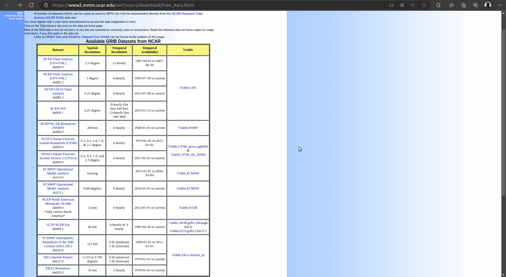
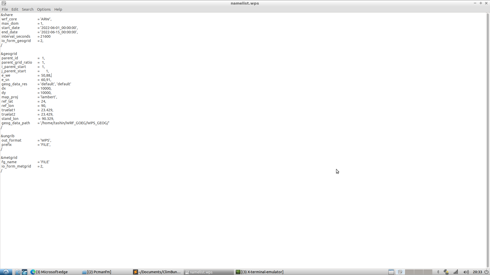
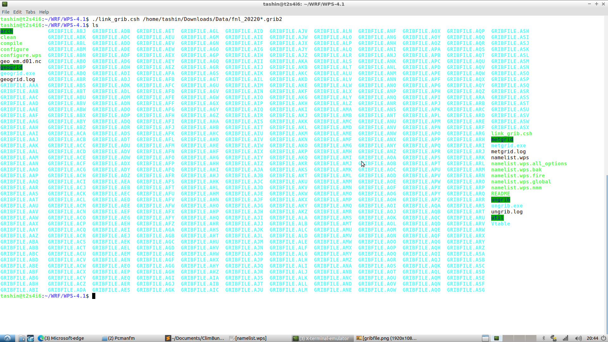
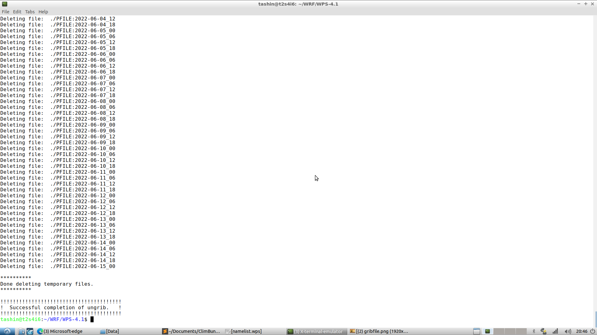
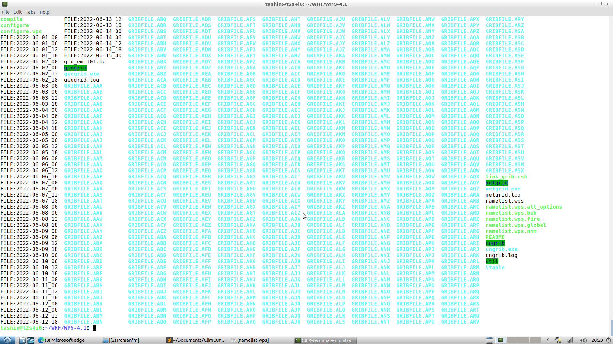
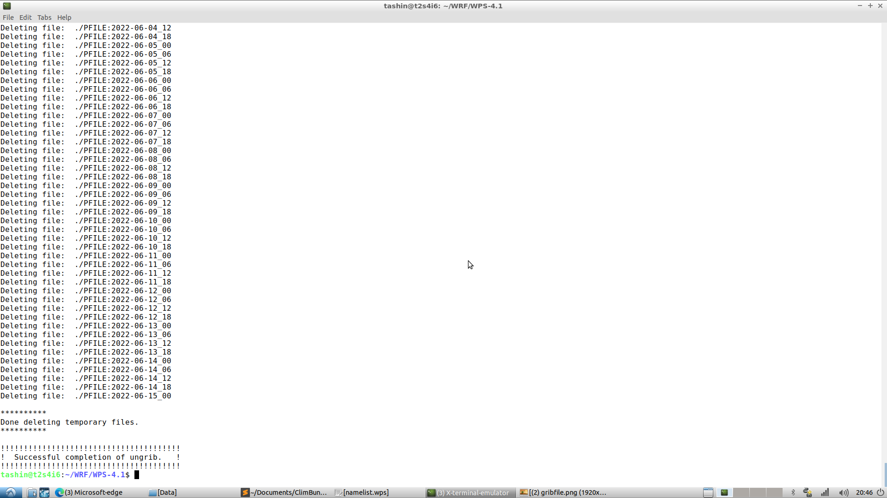
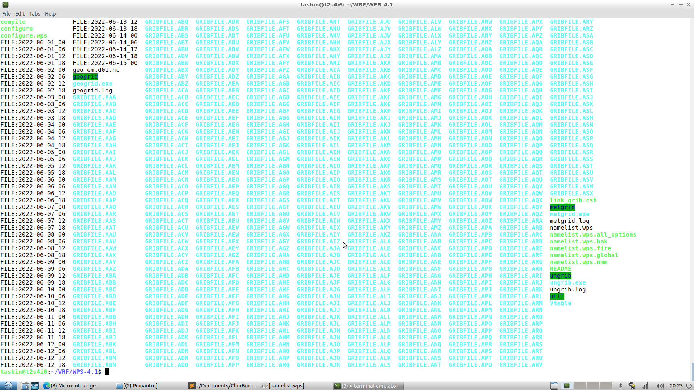
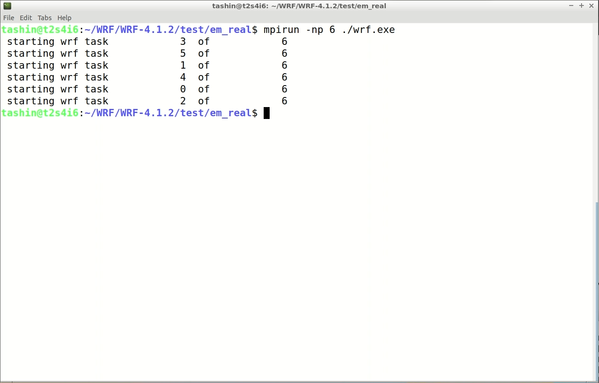

Before running WRF, it's necessary to know the program flow.

This is a general structure of the file directory for running WRF. To run the model there are two parts, WPS & WRF. In WPS geographical and meteorological data are processed to make them compatible with WRF.

namelist file
It is the configuration file for customizing the model. The model built based on the setting of the namelist file. It contains settings for domain configuration, time settings, output options, physics schemes, boundary conditions, initialization, and physics tuning. By modifying the namelist file, you can tailor the model to your specific simulation requirements, such as spatial and temporal resolution, physics options, and input data specifications.
geogrid.exe
it is one of the programs in WPS. It takes static geographic data from an external source and creates terrestrial data. This geographic data includes information such as land use, vegetation, soil types, terrain elevation, and other geographical features. The geogrid.exe program processes this data and prepares it for further use in the modeling process.
ungrib.exe
ungrib.exe is another program in WPS. It unpacks meteorological data from the GRIB format. This meteorological data is obtained from an external source, such as weather observation stations or numerical weather prediction models. ungrib.exe extracts the necessary fields from the GRIB files and converts them into an intermediate file format that the subsequent steps in the modeling process can use.
real.exe
mMoving on to the WRF model itself, real.exe is the program responsible for the vertical interpolation of the meteorological data onto the model's vertical coordinate system. It takes the output files, and horizontally interpolated fields from metgrid.exe and interpolates them vertically to match the levels defined in the WRF model configuration. This ensures that the meteorological data is correctly represented at each vertical level within the model.
wrf.exe
wrf.exe is the main program of the WRF model. It takes the preprocessed meteorological data and other input parameters, such as model configuration settings and boundary conditions, to generate a numerical weather forecast. wrf.exe solves the equations that describe atmospheric dynamics, thermodynamics, and other physical processes to simulate the evolution of weather conditions over time.
1. Go to the Geographical Static Data Downloads Page.
From the page we need to download static geographical data for WPS (geogrid) input. There are mendatory fields required to run WPS and other optional fields which are required for specific application.
2. From the following table, download static geographical data as required.

High resolution data is recommended for batter computation.
1. Go to the Data Downloads Page.
From the following table we will download are input data.
2. let you will download NCEP GDAS Final Analysis data. Clicking on this will bring us to NCAR Research Data Archive (NCAR RDA) website for download the dataset.
3. For downloading any dataset from this Data Archive, an user account is requird. Register a account and then sign in to this data archive.
4. Click on Data Access.
5. Click on Get a Subset. Following page will open. Input the Temporal Seletion and select all the parameter. Then enter continue.

6. Now we will select our area with SPATIAL SELECTION option. From the list select Data within a bounding box. A map will appeare with instruction to specify our area.

7. After specifiying the area click on CLICK HERE button. Page will reload with all updated request. Now click on SUBMIT REQUEST button.
8. An overview of your requested dataset will be shown. It will take some to processing the request. You will get an email when the dataset is ready or you can see the status from the user Dashboard

1. Go to WRF/WPS/ directory.
2. Edit namelist.wps
For a single domain run set, ‘max_dom = 1’. In this setting, the second column will not affect the run as only the first column will be used to run.
&share:
- wrf_core: Specifies the numerical core used in the WRF model (e.g., ARW, NMM).
- max_dom: Specifies the maximum number of domains to be created.
- start_date, end_date: Defines the start and end dates for the simulation.
&geogrid:
- parent_id: Specifies the parent domain ID.
- parent_grid_ratio: Defines the ratio of grid points between the parent and child domains.
- i_parent_start, j_parent_start: Defines the starting indices of the parent domain.
- e_we, e_sn: Specifies the number of grid points in each domain's east-west and south-north directions.
- geog_data_res: Specifies the resolution of the geographical data.
- dx, dy: Specifies the grid spacing in the x and y directions, respectively, for the model domain. These values determine the resolution of the model grid.
- map_proj: Specifies the map projection for the model domain. Common projections include "lambert", "mercator", "polar", "lat-lon", etc.
- ref_lat, ref_lon: Specifies the reference latitude and longitude for the model domain in degrees. These values define the center point of the projection.
- truelat1, truelat2: If using a Lambert Conformal projection, these parameters define the true latitudes for the projection.
- stand_lon: Specifies the standard longitude for the projection.
3. Type './geogrid.exe' and run. It will create a file named geo_em.d0X.nc (here ‘X’ is the domain number).

4. type 'ln -sf ungrib/Variable_Tables/Vtable.GFS Vtable' and run. This is to create a soft link to ‘Vtable’ by the ungrib.exe program unpack the GRIB files and extract the necessary meteorological fields.

5. Type './link_grib.csh path_to_data' and run.This command creates symbolic links (shortcuts) of the GRIB files (meteorological data) within the directory
6. Type './ungrib.exe' and run.ungrib.exe unpacks the GRIB files and extracts the specified meteorological variables. The data is then converted into an intermediate file format (usually in binary format) that is suitable for further processing in the WRF modeling system.
 



7. Type ./metgrid.exe and run. This process involves mapping the data from the input grids to the target model grid, considering the grid spacing, projection, and other domain-specific settings specified in the namelist.wps file. It generates output files that contain horizontally interpolated meteorological fields ready for use as input to the WRF model. These output files provide gridded meteorological data for each model domain specified in the namelist.wps file. Here's an explanation of the metgrid.exe output files:
met_em.d0X.YYYY-MM-DD_HH:MM:SS.nc:
- Format: NetCDF
- X: Domain number
- YYYY-MM-DD_HH:MM:SS: Date and time of the data
Metgrid.log:
- Format: Plain text
- Description: This log file records the details and progress of the metgrid.exe process. It provides information about the interpolation process, any issues or warnings encountered, and summary statistics. It can be useful for troubleshooting and verifying the successful execution of metgrid.exe.


1. Go to /WRF/WRF-4.1.2/test/em_real drectory.
2. Edit namelist.input file, which contains the configuration settings for the WRF model. The file includes various sections and parameters to be specified. Here are some important parameters you may need to modify:
- Start and end dates for the simulation: Set the "start_date" and "end_date" parameters to define the desired time range for the simulation.
- Domain settings: Specify the number of domains using the "max_dom" parameter. Set the grid spacing for each domain using the "dx" and "dy" parameters. Define the projection, reference latitude, and longitude using the "map_proj," "ref_lat," and "ref_lon" parameters, respectively.
- Physics options: Configure the physics schemes for various processes such as microphysics, radiation, and boundary layer physics. You can choose appropriate options based on your research goals and available data.

3. Create symbolic links to the metgrid output file within the directory by executing the following command, 'ln -sf path_to_metgrid_output/met_em* .' . Here ‘*’ make sure all the files starting with ‘met_em’ are selected and ‘.’ (dot) ensures those symbolic links' names remain as it is. Also, don't ignore the ‘ single space’ between ‘*’ and ‘.’ (dot).

4. Run the real.exe utility by executing the command ./real.exe. This step initializes the model's computational domain with the necessary input data, including static geographical data, topography, and initial and boundary conditions.
Once the real.exe process completes, you will find a file named "wrfinput_d01" (or similar) in your WRF directory. This file contains the initialized model fields for the first domain.

5. Run the wrf.exe utility by executing the command ./wrf.exe or mpirun -np X ./wrf.exe, where 'X' is the number of core. This step starts the WRF model simulation using the initialized fields from the previous step. The model will integrate the atmospheric equations forward in time, updating the fields based on the configured physics options and external forcing.
Monitor the progress of the WRF simulation as it runs. You can check the output in the terminal window or log files generated by WRF.
6. Once the simulation completes, you will find output files in the WRF directory, such as "wrfout_d01" (or similar). These files contain the simulated meteorological fields for the specified time period and domain.
